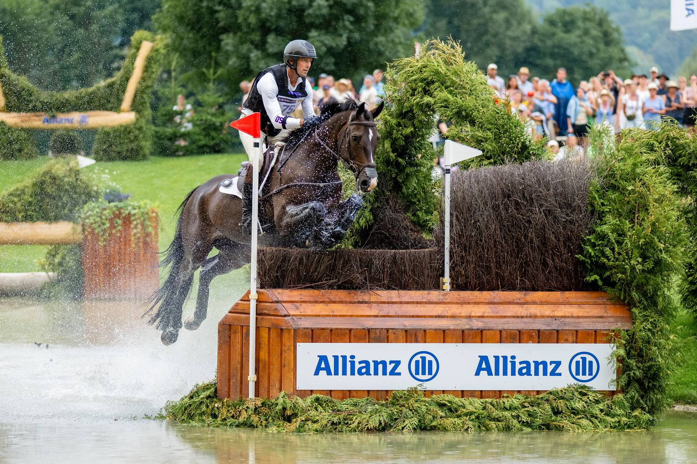

La FEI sopesa una serie CCI5* para frenar la sangría de participantes
El Comité de Concurso Completo de la FEI ha abierto conversaciones con organizadores y con el departamento comercial para estudiar una serie que agrupe los CCI5*, aún en fase preliminar.

Los números explican la preocupación. Burghley reunió a 52 participantes en 2025 y a 48 este año. Badminton contó con 61 binomios en 2026, uno de sus registros más bajos de las últimas dos décadas.
En Burghley pudo pesar otro factor: los Campeonatos del Mundo de Aachen se disputaron apenas unas semanas antes, y algunos de los principales binomios internacionales ya habían competido allí con sus selecciones.
El dato que contrasta es el del público. El propio comité señala que algunos de los grandes CCI5* mantienen una elevada asistencia de espectadores, e incluso la han aumentado respecto a ediciones anteriores.
Así consta en el informe anual del Comité de Concurso Completo, publicado de cara a la Asamblea General de la FEI, que se celebrará el 5 de diciembre en Jiangyin, China. La federación ha hablado con los comités organizadores y con su departamento comercial. El trabajo incluye el intercambio de datos entre organizadores y el análisis de las posibilidades deportivas y comerciales del proyecto.
Por ahora no hay nada decidido. No se ha aprobado la creación de ninguna serie ni se han dado detalles sobre formato, sistema de clasificación, puntuaciones o premios, y tampoco existe un calendario para desarrollar la idea.
El calendario internacional de 2027 contempla seis CCI5*: Adelaide, en Australia; Kentucky, en Estados Unidos; Badminton y Burghley, en Reino Unido; Luhmühlen, en Alemania; y Pau, en Francia.
Entre las propuestas de distintos profesionales figura facilitar la progresión de los caballos hacia este nivel con competiciones preparatorias y recorridos adaptados a su experiencia. La FEI sigue analizando los datos de participación y las necesidades de los organizadores antes de decidir.
Por Lucía Valdeolmos